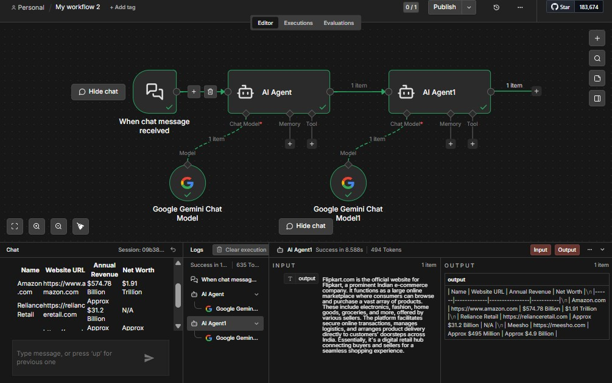

Workflow automation
Automating forms, email, and lead workflows
A set of automation workflows built with n8n. The workflows connect form submissions with email actions and lead management, using conditional IF nodes to route items through the appropriate paths.
n8nGmailWebhooksIF nodesAPIs

Workflow capabilities
Gmail automation
Connect workflow steps to Gmail actions for automated email handling.
Form submissions
Use incoming form submissions to start a workflow and pass submitted data to later steps.
Conditional routing
Apply IF-node conditions to direct workflow items through different paths.
Lead management
Automate steps in lead handling by connecting form and email actions.
Scholarship workflow demo
Watch the recorded n8n workflow walkthrough.
Workflow screenshots

How to use
- 01Install and open n8n.
- 02Import a workflow JSON file.
- 03Configure the required credentials.
- 04Run the workflow and review its execution.